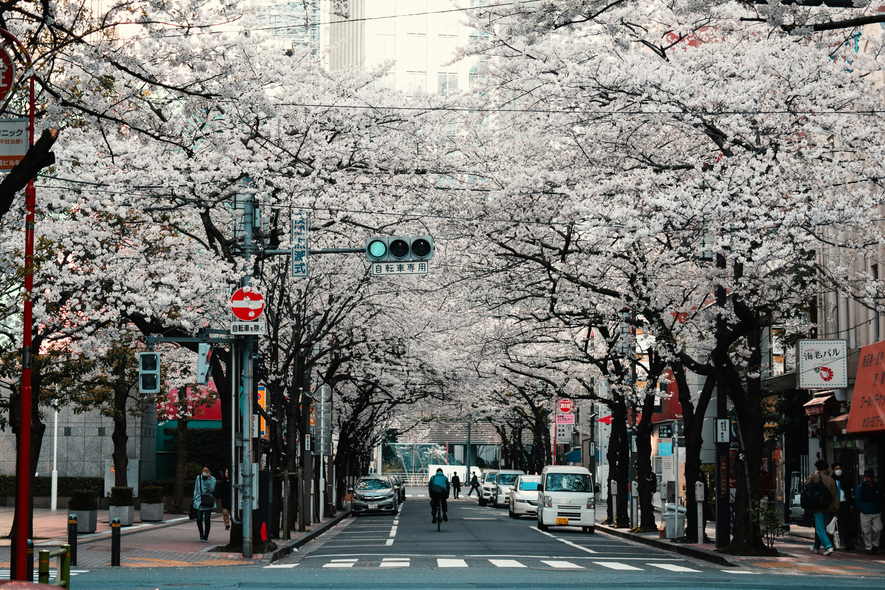
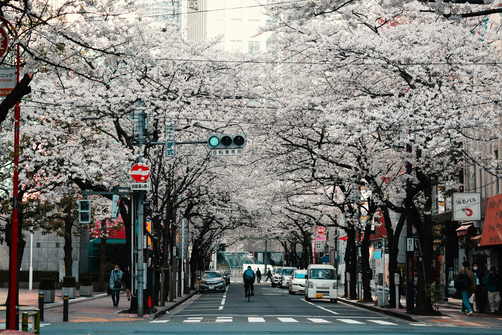
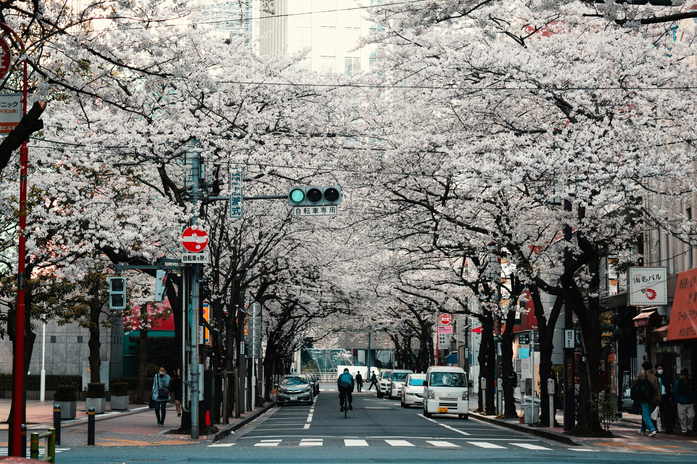

Welcome to Tokyo, a city where ancient traditions harmonize with cutting-edge technology, creating a captivating tapestry of culture and innovation. From the historic charm of Asakusa to the bustling energy of Shibuya Crossing, Tokyo offers a unique blend of old and new. Indulge in the culinary delights of Tsukiji Outer Market, explore Akihabara's tech haven, and savor the panoramic views from the iconic Tokyo Tower. Join us on a journey through this dynamic metropolis, where every corner reveals a story, and every moment is a fusion of tradition and modernity. Discover Tokyo's magic as you navigate its vibrant streets and experience the pulse of a city that never sleeps.

I'm Aoki Sato (佐藤 青木)
Meet Aoki Sato, your gateway to Tokyo's hidden treasures. A Tokyo native and cultural anthropology graduate from the University of Tokyo, Aoki is a passionate tour guide dedicated to unraveling the city's unique charm. Aoki believes in crafting immersive experiences that transcend typical tourist routes. Her tours are a blend of historical richness and contemporary vibrancy, offering a genuine insight into Tokyo's soul. Explore Tokyo's diverse facets with Aoki, whether delving into Akihabara's otaku culture or savoring culinary delights at Tsukiji Outer Market. Tailored to your interests, Aoki's tours promise a fresh perspective on this dynamic city.
Testimonials
"Discovering Tokyo with Aoki felt like exploring with a close friend. Her personalized touch made the city come alive!" - Carlos, Spain
"Aoki's passion for Tokyo is infectious! Her storytelling and historical insights added a layer of depth to our journey." Sarah, USA-
Recent Posts
Navigating Japanese Culture: Etiquette and Rules for a Respectful Visit.
Embarking on a journey to Japan promises a delightful blend of tradition, innovation,
and unparalleled hospitality. To ensure a seamless and respectful experience, here are some essential rules and cultural norms to keep in mind when visiting the Land of the Rising Sun...
Savoring Japan: A Culinary Odyssey Through Timeless Flavors.
Embarking on a culinary journey through Japan is a sensory adventure that transcends
the realm of taste. Japanese cuisine, renowned for its exquisite balance, artful presentation, anddevotion to fresh, seasonal ingredients, is a symphony of flavors that captivates the palate. Let's delve into the essence of Japanese food, where every dish tells a story of tradition, innovation,and meticulous craftsmanship....
 
